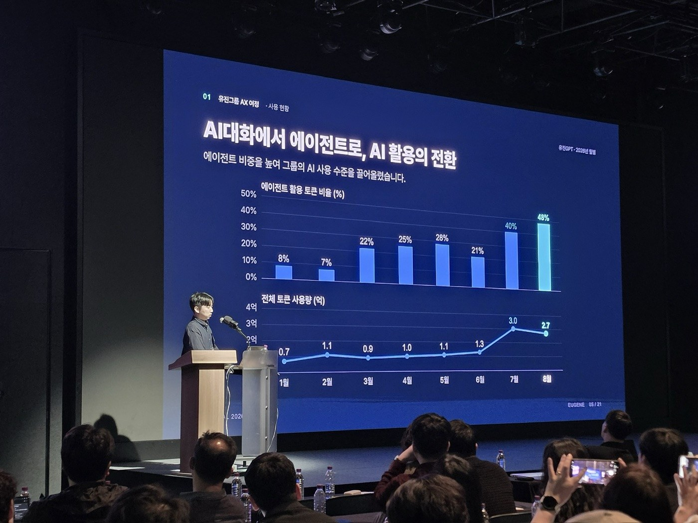

투자심의 사전검토 AI 에이전트Pre-review AI agent for investment committees
유진아이티서비스Eugene IT Service
그룹 AI 서비스 도입 프로젝트 안에서 가장 큰 과제였습니다. 그룹 투자심의 담당 팀의 요청으로 시작했고, 2인 팀에서 엔진의 설계와 구현을 맡았습니다.
This was the largest piece of the group AI rollout project. It started as a request from the group's investment review team, and on a team of two I designed and built the engine.
- 문제Problem
- 임원 투자심의를 AI로 대체해 달라는 요청이었지만, 같은 자료에서 총점이 49점과 43점으로 갈렸습니다.The request was to replace the executive review with AI, but the same documents gave total scores of 49 and 43.
- 접근Approach
- 서버는 LLM을 부르지 않고 지시문과 최소한의 검사만 주는 MCP 엔진을 만들고, 다섯 관점이 ID 붙은 근거 원장만 인용하게 했습니다.I built an MCP engine that never calls an LLM and only issues instructions and minimal checks, and made five viewpoints cite only an evidence ledger with IDs.
- 결과Result
- 현업 리뷰 6회를 거쳐 운영 중. 몇 주에서 몇 달 걸리던 심의 준비 앞단에 한 건당 10~40분의 사전검토 리포트를 제공. 엔진을 5세대 재설계해 코드 6,300 → 1,615줄, 안건당 비용 62% 절감.In production after 6 team reviews. Review preparation used to take weeks to months, and the agent now produces a pre-review report in 10 to 40 minutes per deal. Five generations of redesign took the code from 6,300 to 1,615 lines and cut cost per deal by 62%.
- 역할Role
- 엔진 설계와 구현, 2인 팀Engine design and build, team of 2
- 요청Requested by
- 그룹 투자심의 담당 팀Investment review team
- 현업 리뷰Team reviews
- 6회6
- 엔진 재설계Engine generations
- 5세대5
- 테스트Tests
- 약 680건about 680
- 평가Evaluation
- 정답 16항목 중 1616 of 16 planted answers
Problem
임원 투자심의를 AI로 대체해 달라는 요청이었습니다. 그런데 LLM에 자료를 주고 물으면 같은 자료에서 총점이 49점과 43점으로 갈렸습니다. 게다가 웍스AI는 여러 에이전트를 동시에 돌리는 기능을 지원하지 않았습니다.
The request was to replace the executive investment review with AI. But given the same documents, the LLM produced total scores of 49 and 43. On top of that, Works AI did not support running several agents at once.
Why this approach
일관성을 어디서 확보할 것인가
Where to get consistency from
| 대안 | 장점 | 한계 | 결론 |
|---|---|---|---|
| 프롬프트만 사용 | 구현이 가장 단순함 | 같은 자료에서 총점이 49점과 43점으로 갈림 | 제외 |
| 엔진이 모든 단계를 검증하고 반려 | 순서 위반과 근거 없는 답을 막을 수 있음 | 검증을 통과하려고 양식만 채우는 행동이 생김. 같은 안건을 동시에 심의할 수 없음 | 운영 후 철회 |
| 상태 없는 엔진 + 근거 원장 + 최소 검사 | 구조가 단순하고 동시 심의가 가능 | 순서는 강제하지 못하고 안내만 함 | 현재 운영 |
| Option | Upside | Limit | Decision |
|---|---|---|---|
| Prompt only | Simplest to build | Total scores of 49 and 43 from the same documents | Rejected |
| Engine validates and rejects at every step | Blocks out-of-order steps and unsupported answers | The model started filling in forms just to pass. The same deal could not be reviewed in parallel | Withdrawn after running it |
| Stateless engine + evidence ledger + minimal checks | Simple, and parallel reviews work | Step order is guided, not enforced | In production |
What I did
- 다음 행동 지시문 발급Issues instructions for the next step
- 인자 범위 검사Checks argument ranges
- 외부 증거 조회 여부 확인Confirms outside evidence was looked up
- 기준일보다 늦은 증거 차단Blocks evidence dated after the cutoff
- 근거 확정 여부 확인Confirms the evidence was confirmed
- 첨부 원문 판독Reads the original attachments
- DART, KOSIS, 국가법령 조회Looks up DART, KOSIS and statutes
- 다섯 관점의 의견 작성Writes opinions from five viewpoints
- 점수 산정Scores
- 요청의 범위를 다시 정했습니다I reset the scope of the request
- AI를 위원회의 보조 도구로 둘지, 완전히 대체하게 할지를 현업과 먼저 합의했습니다. 결론은 AI가 사전 심의를 하고 최종 결정은 경영진이 하는 두 단계 구조입니다. 리포트 끝에는 최종 투자 결정이 경영진의 권한이라는 문장을 고정으로 넣었습니다.I first agreed with the team whether the AI would assist the committee or replace it. The answer was two layers: the AI does a pre-review, and management makes the final decision. Every report ends with a fixed sentence saying the final investment decision belongs to management.
- 서버는 LLM을 부르지 않습니다The server never calls an LLM
- MCP 서버는 다음에 할 일을 적은 지시문과 검사 결과만 돌려줍니다. 첨부 판독, DART·KOSIS·국가법령 조회, 의견 작성은 모두 웍스AI의 LLM이 합니다. 그래서 서버 쪽 LLM 비용이 0이고 모델을 자유롭게 바꿀 수 있습니다. 응답은 사용자에게 보이는 진행 표시와 모델만 읽는 지시문, 두 채널로 나눴습니다.The MCP server returns only instructions for the next step and the results of its checks. Reading attachments, looking up DART, KOSIS and statutes, and writing opinions are all done by the LLM in Works AI. Server-side LLM cost is zero and the model can be swapped freely. Responses are split into two channels: progress the user sees, and instructions only the model reads.
- 다섯 관점이 순서대로 심의합니다Five viewpoints review in a fixed order
- 외부투자자, CFO, 감사실, 사업부 대표(옹호 전담), 레드팀(반대 전담) 순서입니다. 플랫폼이 멀티에이전트를 지원하지 않아, 에이전트 하나 안에서 관점을 차례로 이어 붙였습니다. 평가 항목은 전략적 적합성, 가격 매력도, 현금 회수 가시성, 리스크 통제 가능성, 실행 가능성 다섯 가지이고, 항목마다 주 평가 관점 60%와 보조 관점 40%로 점수를 냅니다.Outside investor, CFO, audit, business unit head (advocate) and red team (opponent). Because the platform has no multi-agent support, I chained the viewpoints inside a single agent. There are five criteria: strategic fit, price attractiveness, visibility of cash recovery, risk control and feasibility. Each is scored 60% by its lead viewpoints and 40% by supporting ones.
- 근거 원장으로 결과를 맞췄습니다An evidence ledger keeps results consistent
- 판독한 사실, 사용자의 답변, 외부에서 찾은 증거를 ID가 붙은 표 하나로 확정합니다. 다섯 관점은 이 원장의 ID로만 인용할 수 있고, 사용자가 확인한 값은 어느 관점도 다시 해석하지 못합니다. 매도자 자료의 주장에는 확인됨, 과장 가능성, 근거 부족, 반대 시나리오 존재 네 가지 표시를 붙입니다.Extracted facts, the user's answers and outside evidence are fixed in one table with IDs. The five viewpoints may cite only by ledger ID, and no viewpoint may reinterpret a value the user confirmed. Claims in the seller's material get one of four tags: confirmed, possibly overstated, weak evidence, or counter-scenario exists.
- 사람이 세 번 확인합니다A person checks three times
- 확인 질문, 근거 확정, 추가 토론 여부입니다. 현업은 사람이 입력할 네 항목을 설계해 주었는데, 저는 자료에서 먼저 자동으로 찾고 못 찾은 항목만 묻는 방식으로 구현했습니다. 다음 리뷰에서 이 방식이 좋다는 평가를 받았습니다.Confirmation questions, confirming the evidence, and whether to run a further debate. The team had designed four fields for a person to fill in. I built it to find them in the documents first and ask only about what it could not find, which the team praised at the next review.
- 여덟 섹션 리포트를 만듭니다It produces an eight-section report
- 딜 개요, 핵심 재무 지표, 매도자 측 편향 탐지, 다섯 관점 분석, 찬성·반대 보고서, 심의 점수, 최종 권고의견, 추가 확인 필요 항목입니다. 실무자가 낸 추정과 AI가 독립적으로 낸 추정의 차이는 점수에 반영하지 않고 별도 섹션으로 보여 주기로 현업과 정했습니다. Word 파일로도 저장합니다.Deal overview, key financials, seller-side bias detection, five-viewpoint analysis, for-and-against reports, review score, final recommendation, and items needing follow-up. The team and I decided that the gap between the staff estimate and the AI's independent estimate would not affect the score and would be shown in its own section. The report also saves as a Word file.
- 실측으로 검증했습니다I verified with measurements
- 정답 16항목을 심어 둔 가상 안건을 만들어 16개를 모두 찾아내는지 확인했습니다. 테스트는 약 680건이고, 배포하지 않고도 전 과정을 돌려 볼 수 있는 로컬 실행 환경을 만들었습니다.I wrote a fictional deal with 16 planted answers and checked that the agent finds all 16. There are about 680 tests, and I built a local harness that runs the whole flow without deploying.
How it changed
일곱 달 동안 엔진을 다섯 번 다시 설계했습니다. 더하기만 하지 않았고, 실측을 보고 걷어내기도 했습니다.Over seven months I redesigned the engine five times. I did not only add. Measurements also made me take things out.
- 2026.04v0.1, 도구 1개v0.1, one tool
현업의 기획안을 받아 세 단계짜리 첫 버전을 만들었습니다.From the team's plan, a first version with three phases.
- 2026.06v0.5 ~ v0.6, 도구 16 → 19종v0.5 to v0.6, 16 → 19 tools
단일 파일 5,259줄로 커진 엔진을 패키지로 나눴습니다. 나누기 전과 후가 같은 결과를 내는지 확인하는 테스트를 먼저 썼습니다.The engine had grown to a single 5,259-line file, so I split it into a package. I first wrote tests proving the split version gives the same results.
- 2026.07첫 실제 안건 시범First run on a real deal
전 과정을 처음 돌려 점수 계산의 결함을 찾아 고쳤습니다. 안건 한 건에 토큰이 80만~100만 개 든다는 것도 이때 측정했습니다.The first end-to-end run exposed and fixed a flaw in scoring. It also showed that one deal consumes 800,000 to 1,000,000 tokens.
- 2026.08v2, 도구 11종v2, 11 tools
"판정은 LLM에 맡기고 검증만 코드로 한다"는 원칙으로 다시 설계했습니다. 순서를 어기면 반려하고, 세션은 DynamoDB에 저장했습니다. 발췌 경로에서 판독 오류가 27% 나오는 것을 실측하고 원문을 직접 읽는 방식으로 바꿨습니다.Redesigned on the principle "the LLM judges, code only verifies". Out-of-order calls were rejected and sessions lived in DynamoDB. After measuring a 27% reading error rate on the excerpt path, I switched to reading the original documents directly.
- 2026.09대화 분리로 비용 62% 절감Cost cut 62% by splitting the chat
청구되는 입력의 84%가 첨부 원문을 다시 보내는 데 쓰이고 있었습니다. 판독 대화와 심의 대화를 나눠 안건당 비용을 62% 줄였습니다.84% of billed input was the attachments being resent. Splitting the reading chat from the review chat cut cost per deal by 62%.
- 2026.09simple, 도구 6종simple, 6 tools
검증 단계를 걷어내고 상태를 저장하지 않는 구조로 바꿨습니다. v2의 커밋 111건 중 73건이 수정이었고, 검증이 오히려 양식만 채우는 행동을 유도했기 때문입니다. 코드는 약 6,300줄에서 1,615줄이 됐습니다.I removed the validation steps and made the engine stateless. Of 111 commits on v2, 73 were fixes, and the validation was pushing the model to just fill in forms. The code went from about 6,300 lines to 1,615.
- 2026.11다섯 번째 관점, 근거 확정A fifth viewpoint, evidence confirmation
우려 쪽으로 치우친 점수를 보정하려고 사업부 대표 관점을 넣었습니다. 지시문은 109,297자에서 42,678자로 줄였고, 사람이 근거를 확정하는 단계를 더했습니다.I added the business unit head viewpoint to balance scores that leaned toward concerns. Instructions shrank from 109,297 characters to 42,678, and a step where a person confirms the evidence was added.
Result
현업 리뷰 6회와 임원 회의 2회를 거쳐 실제 안건에 쓸 수 있는 상태로 운영하고 있습니다. 2026년 11월에 사용 가이드를 배포했고, 10월 1일 AX REAL 2026에서 약 300명 앞에 이 설계를 발표했습니다.
After six reviews with the team and two executive meetings, it runs in a state ready for real proposals. I released a user guide in November 2026 and presented the design to about 300 people at AX REAL 2026 on October 1.


Measurement & trade-offs
- 소요 시간Run time
- 관점이 순서대로 실행되어 한 건에 10분 넘게 걸립니다. 분량이 큰 실제 안건은 로컬 측정에서 약 40분이었습니다. 단계마다 진행 상황을 보여 주어 멈춘 것으로 오해하지 않게 했습니다.Viewpoints run in sequence, so one review takes over 10 minutes. A large real deal took about 40 minutes in a local measurement. Progress is shown at every step so users do not think it has stalled.
- 순서 통제Order control
- 지금 엔진은 단계 순서를 강제하지 않고 다음 행동을 안내합니다. 검사를 다시 넣는 기준은 정해 두었습니다. 같은 오판이 실측에서 두 번 이상 나오면 그 검사 하나만 되살립니다.The current engine guides the next step instead of enforcing order. I set a rule for bringing a check back: if the same misjudgment shows up twice or more in measurements, restore that one check only.
What I learned
- 검증을 더하는 것보다 걷어내는 판단이 더 어려웠습니다. 한 달 넘게 만든 검증 코드를 실측 결과를 보고 내려놓았습니다.Removing validation was a harder call than adding it. I let go of validation code that took over a month to build once the measurements came in.
- LLM에게 맡길 것과 코드가 쥘 것의 경계는 설계로 정해지지 않았고, 실측으로 정해졌습니다.The line between what the LLM does and what code controls was not set by design. Measurements set it.
- 요청을 그대로 받지 않고 기술의 한계에 맞춰 범위를 다시 정한 것이 쓸 수 있는 결과로 이어졌습니다.Resetting the scope to fit what the technology can do, instead of taking the request as given, is what led to a usable result.